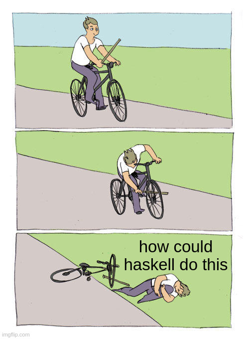
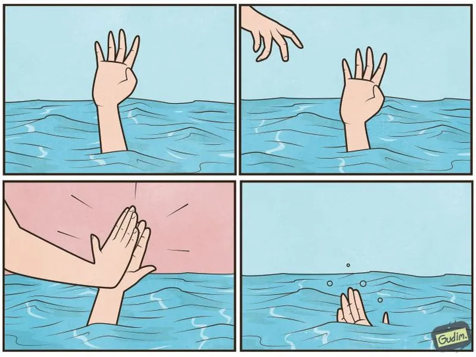
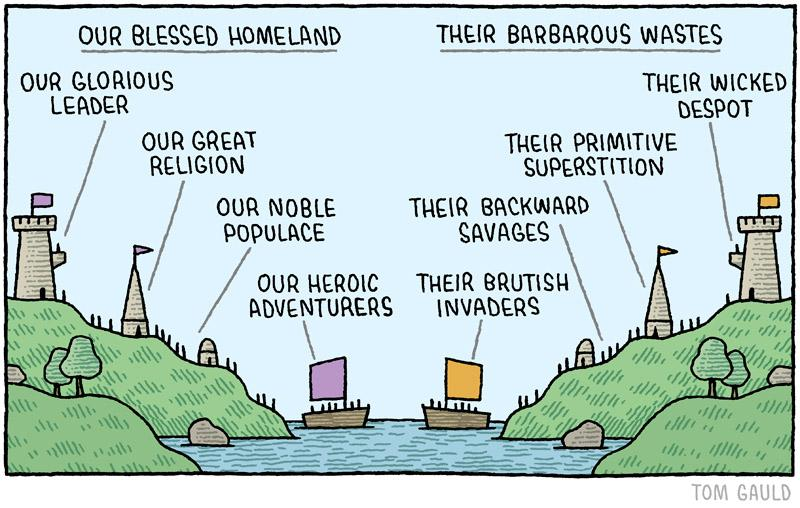
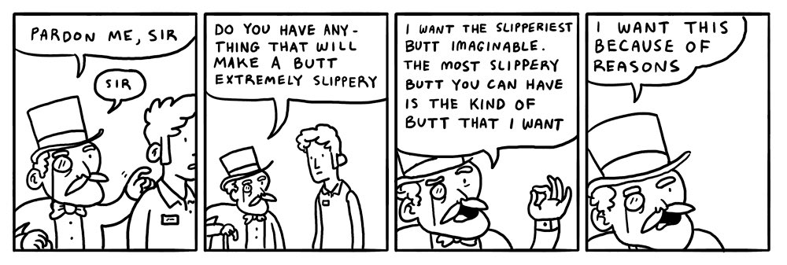
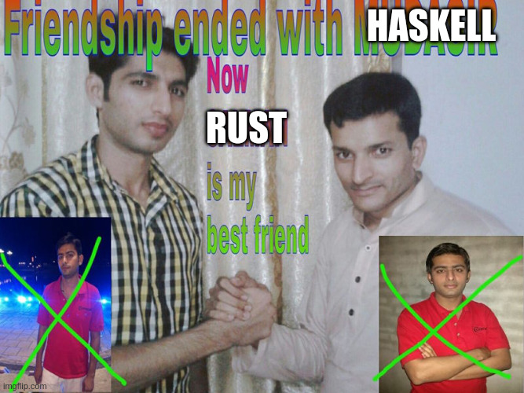
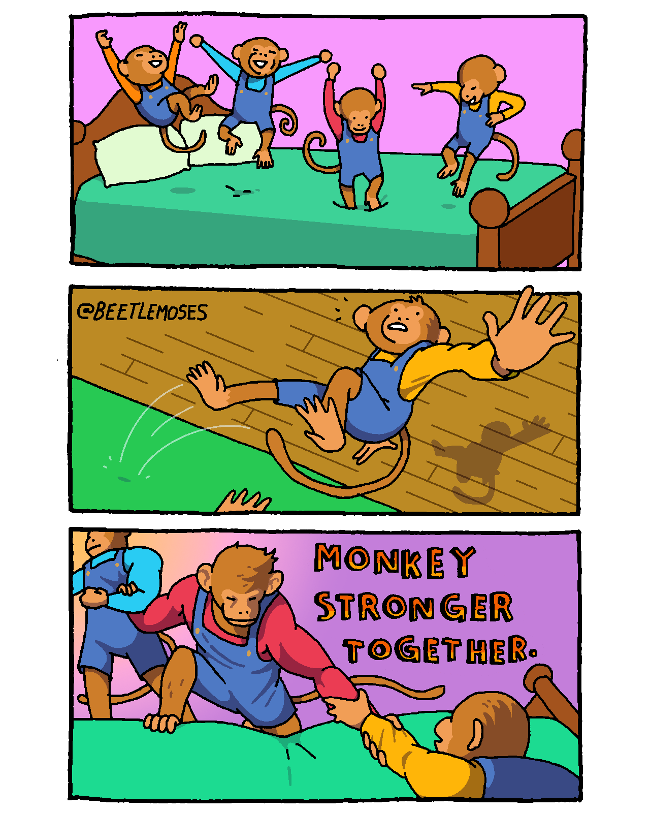
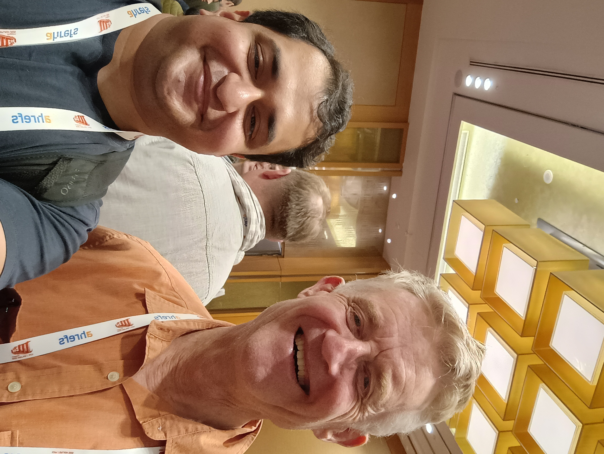

How to stop writing Haskell
(and how to start again)
Vaibhav Sagar (vaibhavsagar.com)
Why would you want to stop writing Haskell?
Great question!
- Haskell is pretty great!
- Companies seem to stop writing Haskell surprisingly often!
- Why does this happen?
An anecdote
About this talk
- Names don’t matter
- About Haskell-the-ecosystem rather than Haskell-the-language
- “All happy families are alike; each unhappy family is unhappy in its own way”
- In dialogue with Evan Czaplicki’s talk on Saturday
- My perspective on the absurdity of the tech industry during an especially absurd time
Suffering from success
Some facts about Haskell
Haskell is not mainstream
- Few domains where Haskell is the “safe” choice
- Nobody Ever Got Fired for Picking Java
- If your Haskell project fails, it’s Haskell’s fault
Haskell is not mainstream

Haskell is not trendy (anymore)
- Other, newer, languages: Rust, Lean, TypeScript, etc.
- Neither trendy enough nor niche enough
Haskell avoids “success at all costs”
- Very sensitive to any one entity exercising undue influence
- Hard to imagine an equivalent to e.g. Jane Street for OCaml
- Competing tools/philosophies, e.g.
lensvs.optics
Some facts about companies
Companies seek to maximise profit
- Specifically shareholder value
- Often incompatible with highest quality product, personal development, and other desirable outcomes
- Worse Is Better
Most companies seek to maximise short-term profit
- Sometimes at the expense of long-term profit
- “The market can remain irrational longer than you can remain solvent” - Keynes
- Objectively bad decisions, e.g. doing a round of layoffs just before an earnings announcement to artificially boost the stock price
Companies undervalue maintenance
- Constant pressure to “do more with less”
- Nobody Ever Gets Credit for Fixing Problems that Never Happened
- Firefighting is more visible and more likely to be rewarded
Companies undervalue maintenance

Why start using Haskell?
Getting paid to write Haskell
- Want to write Haskell
- Convince someone with money to give you/your team that money
- ????
- PROFIT!!!
Some reasons you might use
- Believing that Haskell is a good fit for your problem
- Trying to hire skilled programmers
- Trying to retain a key employee
- Getting people to work on something boring
Taxonomy
A non-exhaustive list
- The Second System
- The Experiment
- The Vanity Project
- The Giant Client
- The Acquisition
- The Insolvency
- The Ousting
- The Magpie
- The Rocket Explosion
- The Outgrowing
Let’s begin!
The Second System
The situation
- Company decides to rewrite a non-Haskell codebase in Haskell
- Implied (or explicit) outcome is that the existing team will lose their jobs
The problem
- Adversarial relationship with current team
- Existing codebase provides business value so you have to work on it
- Second-system effect
Second-system effect
Hofstadter’s Law
It always takes longer than you expect, even when you take into account Hofstadter’s law.
Suggestions
- Ask yourself why a rewrite is happening
- Many successful Haskell adoptions look like sidecars (microservices?)
- Threatening someone’s livelihood is not a good way to get them on your side
- They probably don’t want to learn a new language
- Explore your options! (This will come up a lot)
The Second System Pt. II
The situation
- Company decides to rewrite a Haskell codebase in a non-Haskell language
- Implied (or explicit) outcome is that the existing Haskell team will lose their jobs
- Some might leave after the decision anyway
The situation

The problem
- All the problems I mentioned before
- Working Haskell product is on life support
- Maintaining it is not a fun job (because maintenance is undervalued!)
Suggestions
- Don’t panic!
- Hofstadter’s Law
The Experiment
The situation
- Funding (often fixed-term) to solve a problem with Haskell
- Eventually runs out
The problem
- Software projects and tight deadlines don’t mix
- Haskell is blamed for the failure
- The problem with venture capital is that you eventually run out of other people’s money
Suggestions
- Ride the gravy train till the end?
- Figure out an exit plan while things are still good
The Vanity Project
The situation

The situation
- Somebody starts a Haskell project as a way of enriching their personal brand
The problem
- Questionable attachment to Haskell or the project itself
- Increasingly bizarre requests for features
Suggestions
- Ride the gravy train until the end?
- Use the opportunity for personal/professional development
- Try not to leave a smoking crater behind
The Giant Client
The situation
- Company ostensibly has multiple clients, in practice only one
- Client ends its contract
The problem
- Niche client pool
- Buyer’s market
Suggestions
- Try very hard to avoid this situation
- Exit plan!
The Acquisition
The situation
The situation
- Company is acquired by another, larger, company
- Often an acqui-hire rather than a product acquisition
The problem
- Acquiring company has no attachment to Haskell
- One less Haskell company
Suggestions
- Stay just long enough for your stock to vest?
- Exit plan!
The Insolvency
The situation
- Company runs out of money
The problem
- Company runs out of money
Suggestions
- You tell me?
The Ousting
The situation
- Influential person leaves the company or moves to a different role
- Their political capital was enabling the use of Haskell
The problem
- Replacement wants to “shake things up” which usually involves getting rid of Haskell
- see: Second System Pt. II
Suggestions
- This rarely happens immediately
- Could try to push back, but it might not work
- Exit plan!
The Magpie
The situation

The situation
- Company picked Haskell because it was trendy at the time but has pivoted to e.g. Rust
The problem
- Second System Pt. II
- No attachment to Haskell but also no attachment to the replacement language
Suggestions
- Ask the difficult questions about why technology choices are made
- Lindy effect
The Rocket Explosion
The rocket explosion
The situation
- Haskell codebase is too complicated
The problem
- Abstraction ceiling in Haskell is enormously high
- Second System effect means the replacement could be worse!
Suggestions
- Collectively agree and enforce which subset of Haskell you are using
The Outgrowing
The situation
- Company grows large enough that they have extremely specific requirements of the Haskell ecosystem
The problem
- Companies are reluctant to fund this development work or do it themselves
- “Avoid success at all costs” means the ecosystem isn’t going to do what you want just because you want it
- Eventually the codebase bitrots and a heroic effort to rewrite in another language starts
Suggestions
- Put your money where your mouth is (nobody ever gets credit for fixing problems that never happened)
- Most large non-Haskell companies have teams dedicated to developer tooling for other languages, why not us?
Recap
A non-exhaustive list (again)
- The Second System
- The Experiment
- The Vanity Project
- The Giant Client
- The Acquisition
- The Insolvency
- The Ousting
- The Magpie
- The Rocket Explosion
- The Outgrowing
Rarely Haskell-specific!
What to do?
Take care of yourself first
- Your greatest leverage as an individual is your ability to walk away
- Your reputation outlives any job you will have
Just walk out
Spend your political capital wisely
- If the approval for Haskell flows from you, things will probably change when you leave
- Pointing out mistakes to management might not work
Collective action is pretty great

Collective action is pretty great
Failure is not the end
- Could do everything right and it might not matter
- That API DSL is very much alive and in use
- Make the most of the opportunities you have
- Hope springs eternal
Is it worth it?
Moving to New York City

Starting my SPJ selfie collection
Making new friends
Moving back to Australia
Scuba diving with my mum

SPJ selfie 2

Pursuing my passions
One more SPJ selfie
There’s so much more Haskell to be written
Thank you!
Slides
https://vaibhavsagar.com/presentations/how-to-stop-writing-haskell/